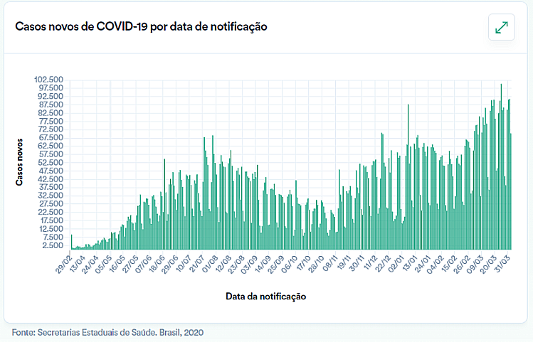
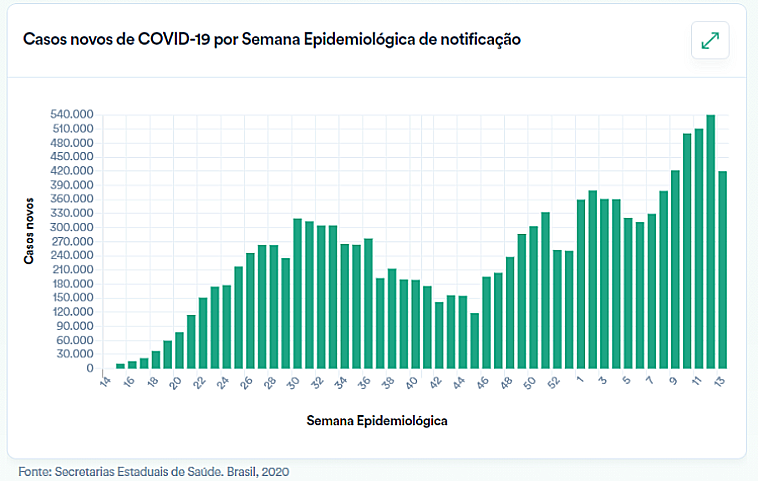

O que é COVID-19, e quais seus impactos no Brasil e no mundo?
A COVID-19, provém de um vírus chamado Sars-Cov2, que possui uma grande família. Esses agentes são encontrados em muitas espécies de animais, como em camelos, gatos, gado e morcego. É incomum os coronavírus animais, infectarem seres humanos, como o MERS-CoV e SARS-CoV. Recentemente, em dezembro de 2019, houve a transmissão de um novo coronavírus (SARS-CoV-2), o qual foi identificado em Wuhan na China e causou a COVID-19, sendo em seguida disseminada e transmitida pessoa a pessoa. No total, são sete coronavírus humanos (HCoVs). Dentre os que foram identificados são: HCoV-229E, HCoV-OC43, HCoV-NL63, HCoV-HKU1, SARSCOV (causador da síndrome respiratória aguda grave), o MERS-COV (vírus causador da síndrome respiratória no Oriente Médio) e, recentemente, o novo coronavírus que inicialmente recebeu o nome de 2019-nCoV e, posteriormente, SARS-CoV-2, responsável por causar a doença COVID-19 (PAS/OMS, 2020).
Ela apresenta um espectro clínico variando de infecções assintomáticas a quadros graves. De acordo com a Organização Mundial de Saúde, a maioria (cerca de 80%) dos pacientes com COVID-19 podem ser assintomáticos ou oligossintomáticos (poucos sintomas), e aproximadamente 20% dos casos detectados requer atendimento hospitalar por apresentarem dificuldade respiratória, dos quais aproximadamente 5% podem necessitar de suporte ventilatório.
Os sintomas da COVID-19 podem variar de um resfriado, a uma Síndrome Gripal-SG (presença de um quadro respiratório agudo, caracterizado por, pelo menos dois dos seguintes sintomas: sensação febril ou febre associada a dor de garganta, dor de cabeça, tosse, coriza) até uma pneumonia severa. Sendo os sintomas mais comuns:
- Tosse
- Febre
- Coriza
- Dor de garganta
- Dificuldade para respirar
- Perda de olfato (anosmia)
- Alteração do paladar (ageusia)
- Distúrbios gastrointestinais (náuseas/vômitos/diarreia)
- Cansaço (astenia)
- Diminuição do apetite (hiporexia)
- Dispnéia ( falta de ar)

A pandemia, causada pelo vírus SARS-CoV-2 ou Novo Coronavírus, vem produzindo repercussões não apenas de ordem biomédica e epidemiológica em escala global, mas também repercussões e impactos sociais, econômicos, políticos, culturais e históricos sem precedentes na história recente das epidemias.
A avaliação de contaminados e mortos coincide exatamente com o embate sobre os sistemas de saúde, com a exposição de multidões e classes vulneráveis, a base econômica do sistema financeiro e da população, a saúde mental das pessoas em tempos de confinamento e temor pelo risco de adoecimento e morte, acesso a bens essenciais como alimentação, medicamentos, transporte, entre outros.
Além disso, a necessidade de ações para contenção da mobilidade social como isolamento e quarentena, bem como a velocidade e urgência de testagem de medicamentos e vacinas evidenciam implicações éticas e de direitos humanos que merecem análise crítica.
Número de casos no Brasil
Abaixo, segue o painel de informações sobre a COVID-19 adaptado, com as informações do dia 02/04/2021, disponivel em: https://covid.saude.gov.br/:
Agora, alguns gráficos sobre o aumento de casos:
 Impactos ambientais consequentes da pandemia
Após a declaração da pandemia, foi utilizado o método de quarentena, para conter a disseminação do vírus. Essa quarentena, fez com que a maioria da população ficasse em casa, diminuindo o trabalho dos setores industriais, e outrtos setores que não foram classificados como "essenciais". Com isso, foi observada uma limpeza natural nos mares, deixando-os limpos de uma forma que não era vista há muito tempo. Entretanto, a população ficando em casa, obteve um maior número de descarte de lixo. Sendo assim podemos observar pontos POSITIVOS e NEGATIVOS que o vírus trouxe, para o meio ambiente.
Impactos positivos
- Ar mais limpo;
- Diminuição de entulho e resíduos em polos ambientais como mares, florestas e rios;
- Redução das emissões de gases que contribuem para as mudanças climáticas;
- Retomada parcial do nível de reservatórios hídricos.
Impactos negativos
- Expectativa elevada de poluição pós pandemia - devido a volta em massa de todos os setores;
- Descarte inadequado de lixo comum - com a maioria da população em casa;
- Descarte inadequado de lixo hospitalar - lotamento de hospitais, mesmo sem coleta de lixo seletiva;
- Descarte inadequado de lixo contaminado residencial;
- Descarte inadequado de EPIs (Equipamento de Proteção Individual) usados, como máscaras, luvas, entre outros.
Esse descarte indevido de materiais hospitalares e contaminados, trazem consequências para o meio ambiente e para a própria população. Saber a diferença do descarte, entre o pré e o pós pandemia, é importante para a elaboração de medidas com o propósito de erradicar, ou pelo menos diminuir esse problema.